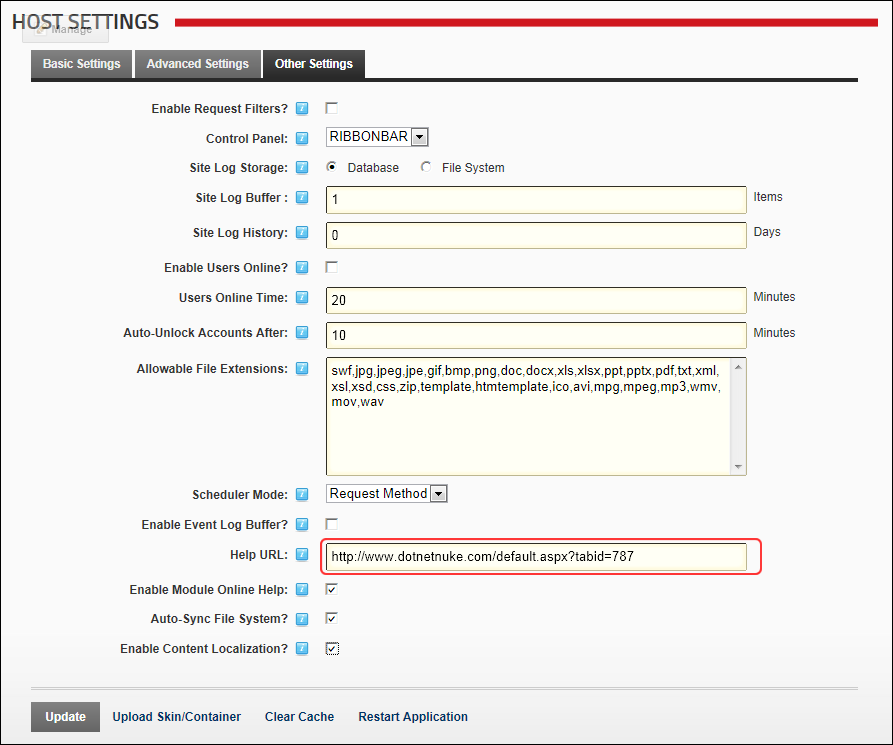

- To restore Online Help URL to the default DotNetNuke Online Help: Enter
http://www.dnnsoftware.com/Help - To set a custom URL: Enter the URL to your help resource.
- To disable Online Help: Leave this field blank.
How to set the URL for the Online Help service for all sites. This is the URL associated with the Online Help button accessed via module actions menus. Leave this field blank to remove Online Help from the Admin and Host consoles of DotNetNuke. This is the URL associated with the Online Help button accessed via module actions menus. Leave this field blank to remove Online Help for the Admin/Host areas of DotNetNuke. The default setting is to the Online Help provided by DNN Corp which is located at http://www.dnnsoftware.com/help.
http://www.dnnsoftware.com/Help